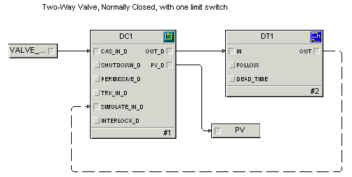

Edit the NC_VALVE control module class
- Open the NC_VALVE control module class in Control Studio. (In the DeltaV Explorer, right-click the class, and then select Open with Control Studio.) It contains a single DC function block.
- Click the DC1 function block.
- In the lower left pane, double-click the MODE parameter.
- On the MODE Properties dialog, select both Auto and Cascade as permitted modes.
- Set both the Normal mode and Target mode to Cascade. (The phase logic will be writing to the CAS setpoint, and the block must be in CAS mode to respond to CAS setpoint changes.)
- Add an input parameter from the Special Items palette, dragging it to the left of the DC block, as shown in the figure below. On the Parameter Properties dialog, name the parameter VALVE_SP, keep the parameter type as Floating point, and check the box marked Allow instance value to be configured.
- Draw a connection line between VALVE_SP and the CAS_IN_D parameter on the DC block.
- Show PV_D as an output parameter on the DC block. (To do this, right-click the DC block, select Show Parameter, browse for the PV_D parameter, and then select Output as the type of parameter.)
- Add an output parameter from the Special Items palette, dragging it to the right of the DC block. On the Parameter Properties dialog, name the parameter PV and keep the parameter type of Floating point.
- Draw a connection line between PV_D on the DC block and the PV parameter.
- Add a Deadtime (DT) block from the Analog Control palette, dragging it to the right of the DC block.
- Draw a connection line from the OUT_D parameter on the DC block to the IN parameter on the DT block.
- Draw a connection line from the OUT parameter on the DT block to the SIMULATE_IN_D parameter on the DC block. (The reason for looping back to the SIMULATE_IN_D parameter is that we will be using modules derived from this class during some simulation exercises.)
- In the Diagram View, right-click, and then select Properties.
- On the Displays tab, browse for and select Process as the primary control display.
- Save NC_VALVE.
The completed function block diagram looks like the following.

Note:
Control Studio automatically depicts a feedback wire, such as the line between OUT on the DT block and SIMULATE_IN_D on the DC block, as a dashed line after you save a module or manually set its execution order. To manually set or remove a feedback wire, select the line, right-click, and then select or . Whether the line is dashed or solid has no effect on the logic; it is simply a visual clue.